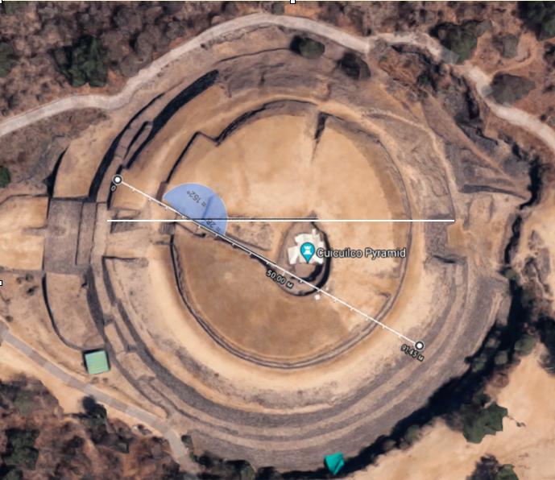
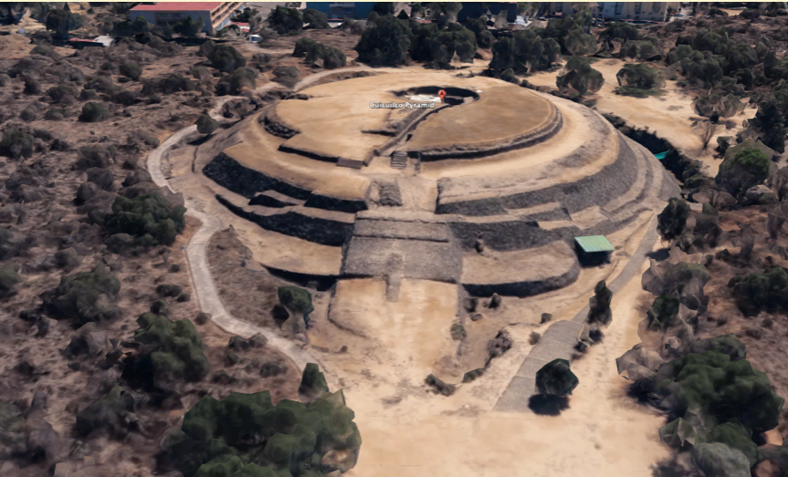
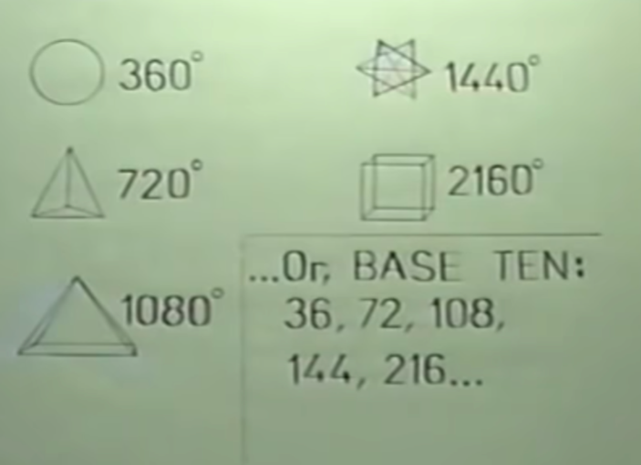
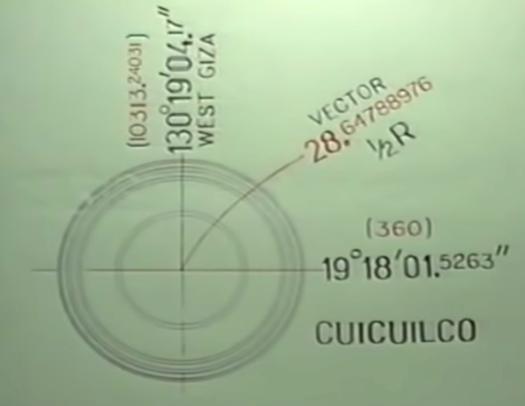
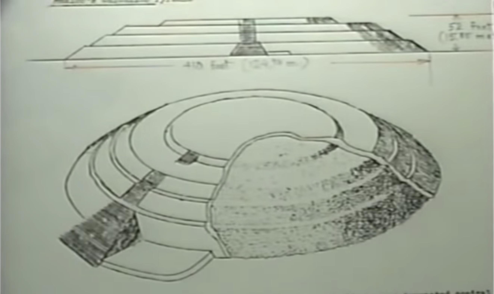

Only few people knows that pyramids can be not only quadrangular but also spherical.
Cuicuilco pyramid in Mexico is round, it has 360 degrees, and it is exactly equal to its latitude
19.18.01.52631 north of the equator. Multiplying these numbers gives exactly 360.
Confirmation of our assumptions shows that we are on the right track. You just have to use their
language. We only have to admit that they knew mathematics no worse, and maybe better than us, or
forget about everything we found and believe the official history. What we see in the Matrix
is evidence of a civilization that has brought cartography to the rank of art, and it is
clearly not the creation of the hands of primitive Stone Age creatures. Why Cuicuilco consists of 4 terraces? To explain how they performed spherical calculations, we must represent this pyramid as an equation. It explains how to calculate spheres without using the constant PI, but more on that later. We have assumed that the spherical pyramid at Cuicuilco is an equation in spherical mathematics. However, this pyramid is partially underground. In our time, very few artifacts have come down to us intact. The base of this pyramid is 33 feet below the ground, due to the flow of lava from a volcanic eruption a little over 2,000 years ago, and at that time this pyramid was already quite ancient.
These facts confirm that spherical mathematics was known and used long before our era. Why was this fact unnoticed before? Because we looked at these artifacts with our eyes, not theirs. They used mathematics in a different way than we did, they used mathematics in geodesy using a methodology we were unfamiliar with, so that when archaeologists came to the conclusion that it was a temple, and such errors in our stories we find everywhere.
Note that the mathematics we know is correctly constructed, real and accurate, so accurate that it has allowed our civilization to launch space satellites outside the solar system. However, the mathematics used by the creators of these artifacts is nonverbal and its logic is not so easy to understand. Our axioms of mathematics are quite simple, they are based on the constants of geodetic forms, 360 degree circle, 720 degree tetrahedron, 1080 degree pyramid, 2160 degree cube, and other geometric figures, as well as PI constant. We also do not forget about prime numbers. These are our constants. However, many of our constants can be placed, which we have not listed in a separate series.
We are not used to recognizing constants that are the result of multiplying or dividing constants. So when we look at something like the pyramid at Cuicuilco, all we can see are 4 360-degree circles. See if you can see formulas for spherical calculations in them? Maybe no. We are not used to use mathematics as they did, and we will not be able to learn to think as they thought and recognize these laws. Until we realize that there are other levels of mathematics higher than the ones we are used to, the levels we have not yet reached. However, even if we look at these high levels in order to understand them, we will still use the tools of such knowledge based on our level.
The only way out is to start all over again. Discard everything we knew about math except constants and try to learn a new discipline through mathematical operations on numbers and constants in order to try to reach a new level. Repeat these iterations over and over again in search of new results.
Mathematics is a clear and inflexible science, its laws are unchanged, at least we are used to such mathematics, but this does not mean that other results are impossible. In our coordinate system, a circle has specific attributes. We see a circle and we want to measure it, find out the radius, diameter, length of a circle, area and so on.
However, suppose that the size of the circle is not important, suppose that the language spoken to us by the circle is the same regardless of its size. Let's take a closer look at the radian. All circles, regardless of their size, are 360 degrees. The value of the radian is obtained by dividing 360 degrees by 2n.
The result will be the same for all circles of 57.29577951 degrees and for those whose diameter is 2 feet and for those whose diameter is hundreds and thousands of miles. The value of radians in degrees will be constant. If the prehistoric creators of the pyramids used such terms, we will never know anything by measuring objects as we are used to. Any measurement results would be meaningless.